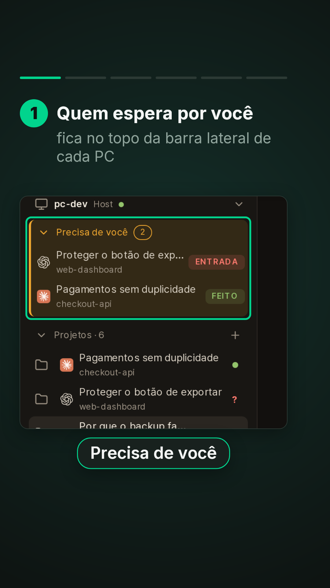
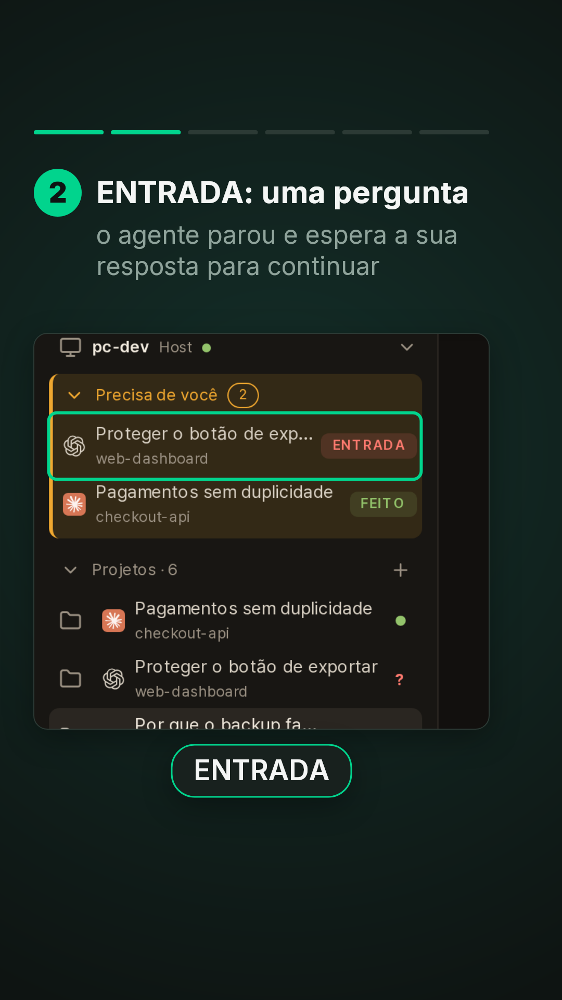
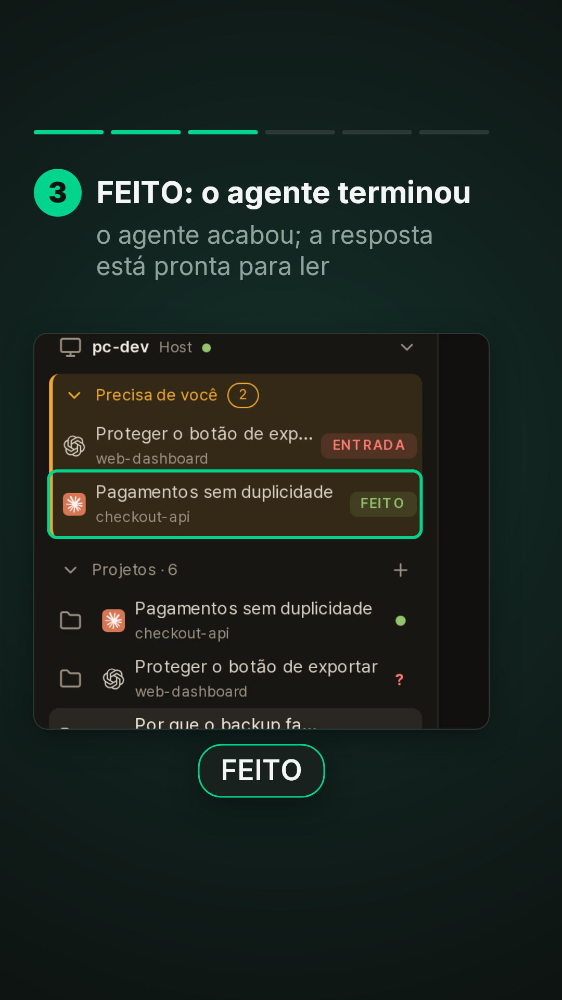
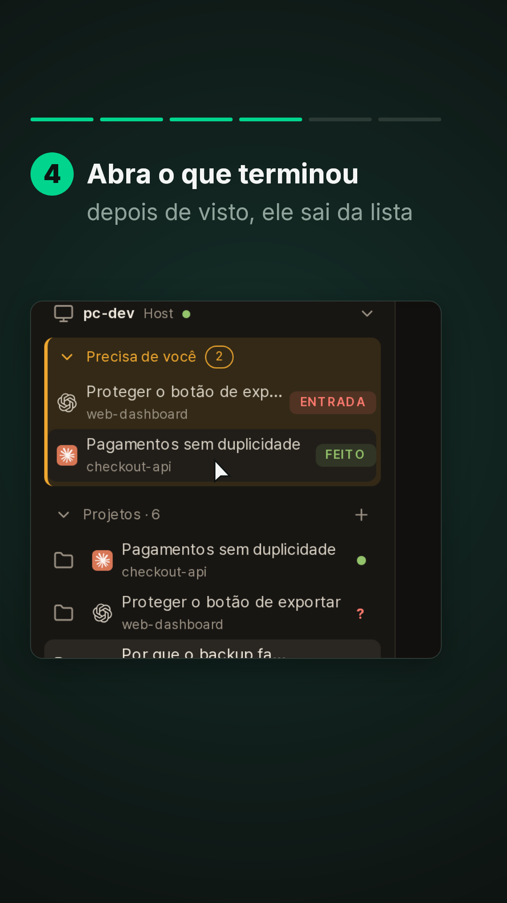
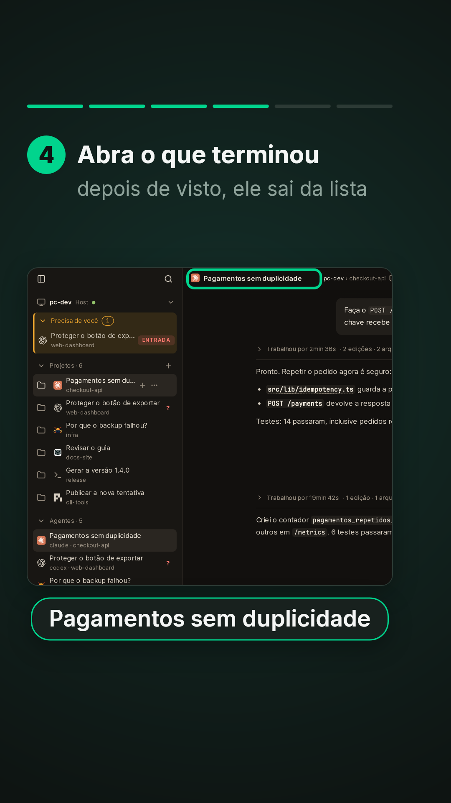
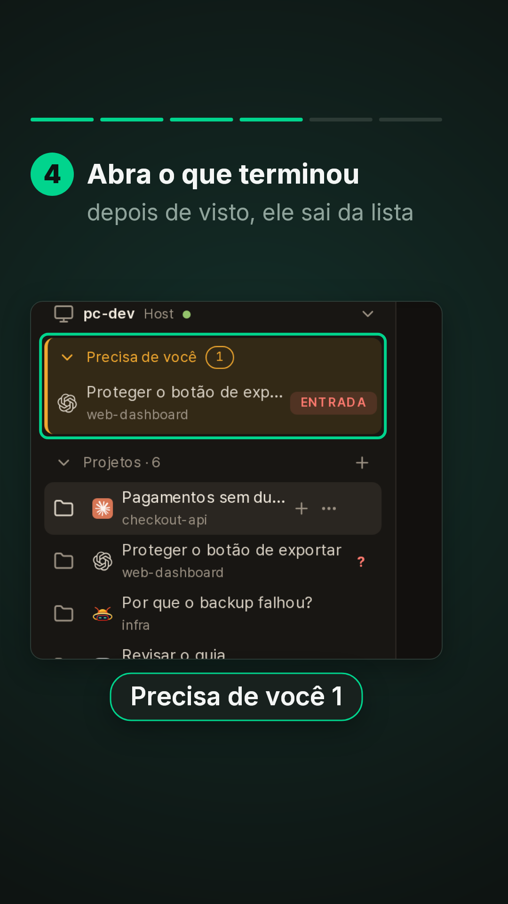
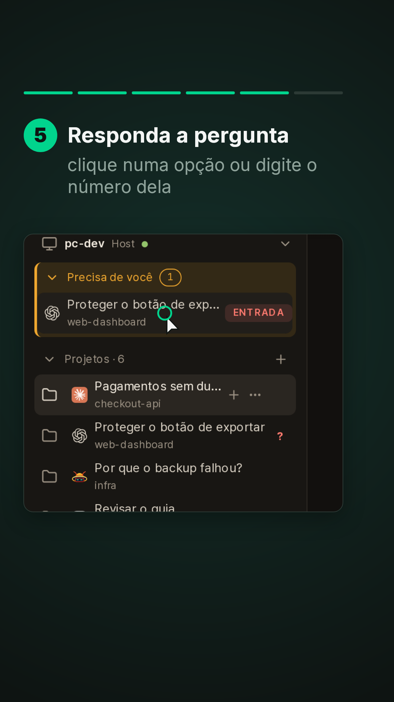
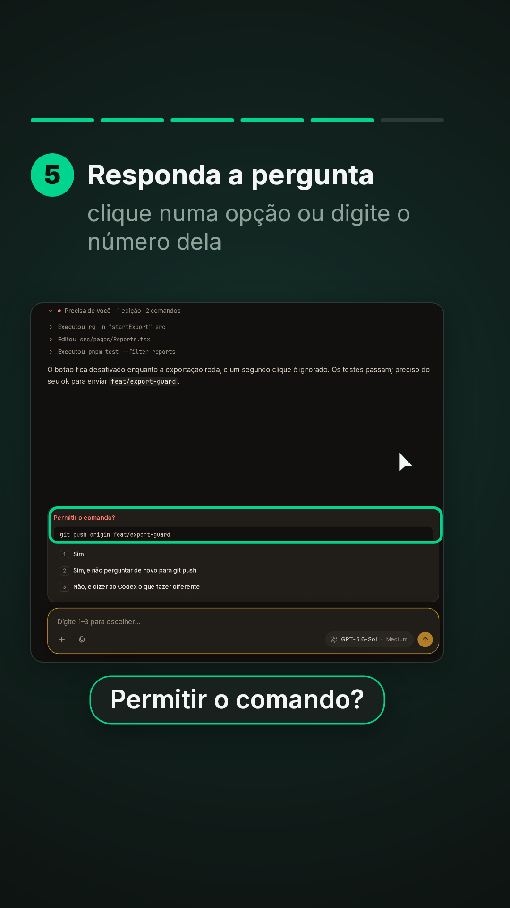
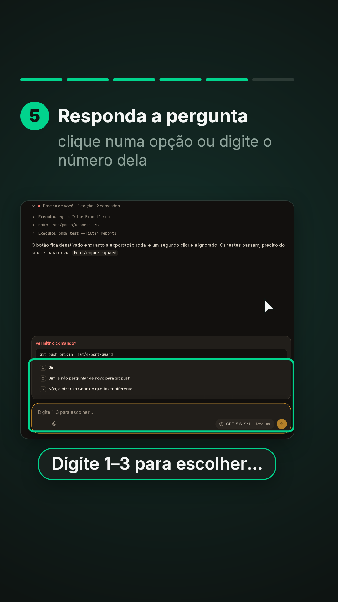
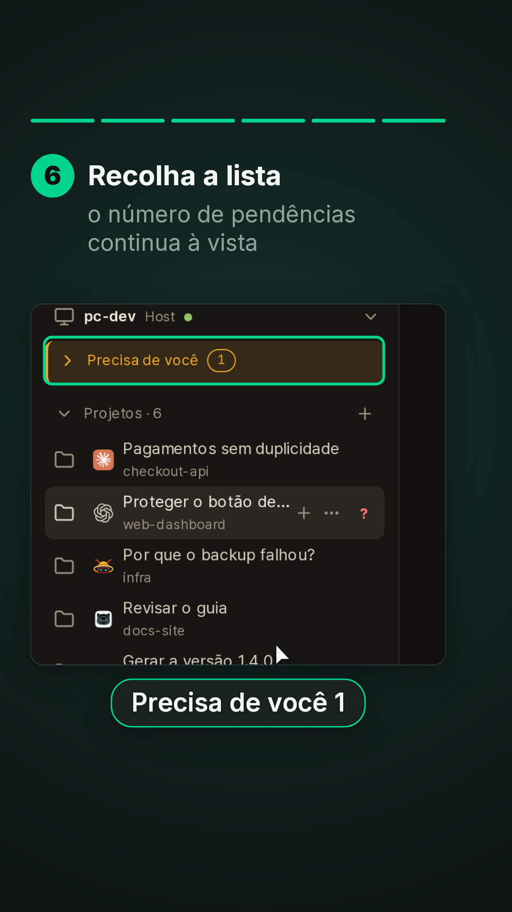
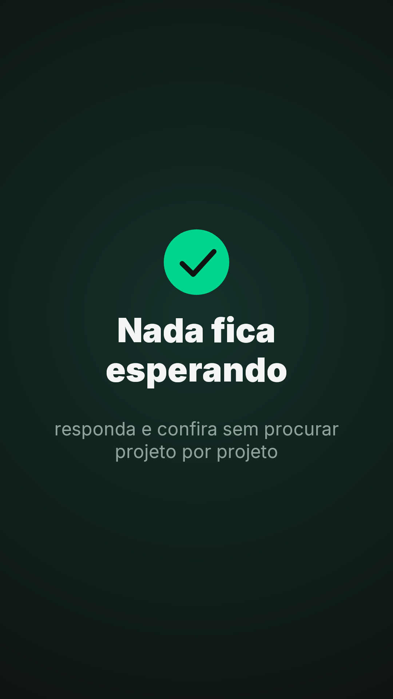
# Precisa de você (série "Veja em ação" do DevDA, vídeo 5) - **Formato:** 9:16 (1080x1920), **51 s**, sem áudio, paleta Data Agile. Material de treinamento. - **Para que serve:** o bloco "Precisa de você", no topo da barra lateral de cada PC, junta os agentes que pararam numa pergunta (ENTRADA) e os que terminaram e ainda não foram vistos (FEITO). Um clique abre o agente; o que foi visto sai da lista; o bloco pode ser recolhido. - **Material:** prints da **sessão de demonstração** com textos fictícios em pt-BR (`_captura/prep-ptbr.py`, que também traduz a pergunta "Permitir o comando?" e as opções). Desktop 1440x900 @2x. Captura: `_captura/shoot-precisa.ts`. - **Rótulos exatos** (`i18n.pt.ts`, `NeedsInput.tsx`, `PromptCard.tsx`): "Precisa de você", "ENTRADA", "FEITO", "Permitir o comando?", "Sim", "Sim, e não perguntar de novo para git push", "Não, e dizer ao Codex o que fazer diferente", "Digite 1–3 para escolher…". - **Fica em inglês na tela** (nome do produto ou do agente, não tradução): "Medium" no seletor de modelo, e os agentes codex, claude e gjc. ## Gramática de movimento Igual aos vídeos 1 a 4. Barra de 6 passos. ## Tabela | tempo | passo | câmera | objetos e motion | legenda (título / apoio · rótulo) | |---|---|---|---|---| | 0–4,4 | Capa | — | — | **Quem precisa / de você** / agentes que perguntaram ou terminaram ficam no topo | | 4,4–11,0 | 1 | tela inteira, zoom na barra lateral (5,6) | contorno no bloco | Quem espera por você / fica no topo da barra lateral de cada PC · "Precisa de você" | | 11,0–16,6 | 2 | barra lateral | contorno em "Proteger o botão de exportar" | ENTRADA: uma pergunta / o agente parou e espera a sua resposta para continuar · "ENTRADA" | | 16,6–22,6 | 3 | barra lateral | contorno em "Pagamentos sem duplicidade" | FEITO: o agente terminou / o agente acabou; a resposta está pronta para ler · "FEITO" | | 22,6–31,6 | 4 | barra lateral, tela inteira (25,6), barra lateral (28,8) | cursor e clique no FEITO (25,2); a conversa abre; contorno no título; contorno no bloco, agora com 1 | Abra o que terminou / depois de visto, ele sai da lista · "Pagamentos sem duplicidade"; "Precisa de você 1" | | 31,6–40,0 | 5 | barra lateral, a pergunta (34,0) | clique na ENTRADA (33,6); a pergunta abre; contorno na pergunta; contorno nas opções e na caixa | Responda a pergunta / clique numa opção ou digite o número dela · "Permitir o comando?"; "Digite 1–3 para escolher…" | | 40,0–46,0 | 6 | barra lateral (40,2) | clique no cabeçalho do bloco (42,0); o bloco recolhe; contorno | Recolha a lista / o número de pendências continua à vista · "Precisa de você 1" | | 46,0–51 | Fechamento | — | círculo, visto, frase | **Nada fica / esperando** / responda e confira sem procurar projeto por projeto |